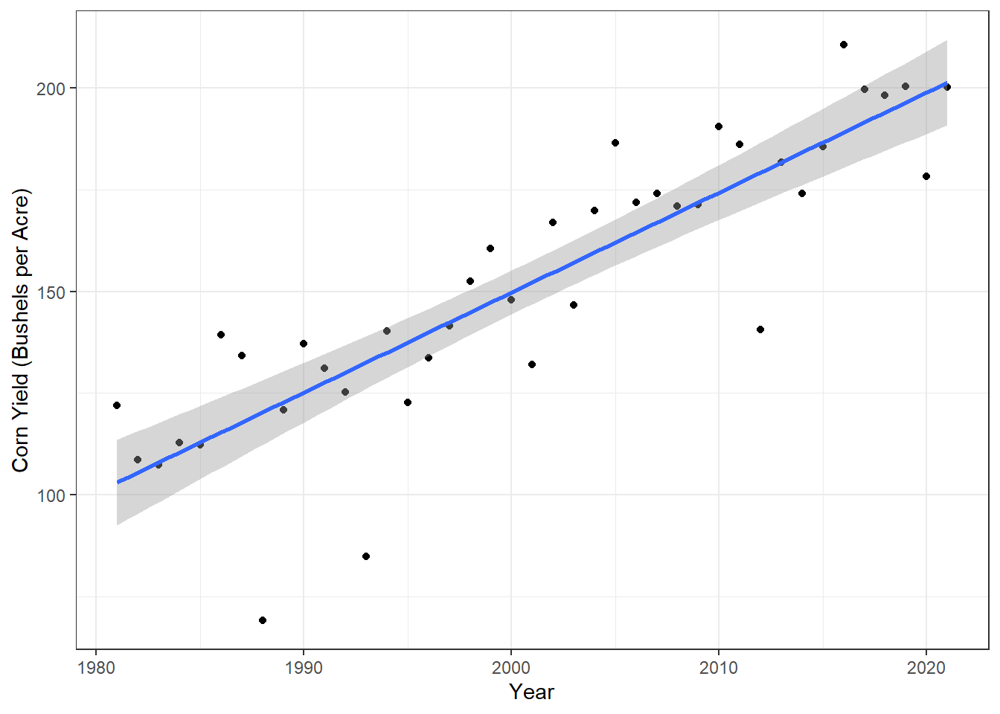
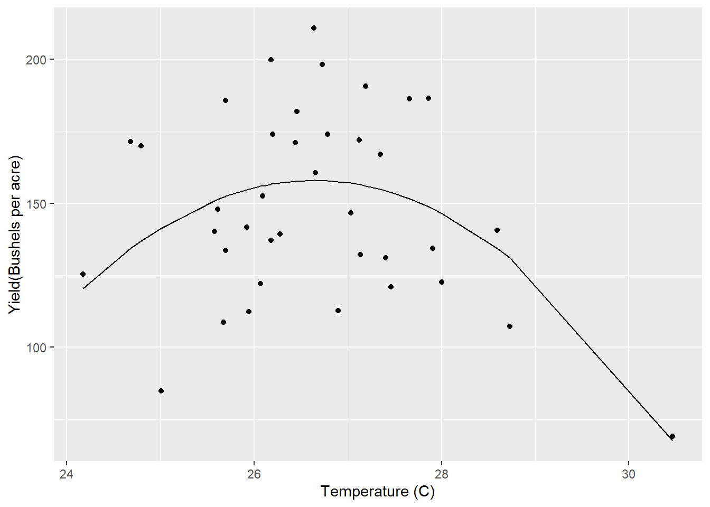
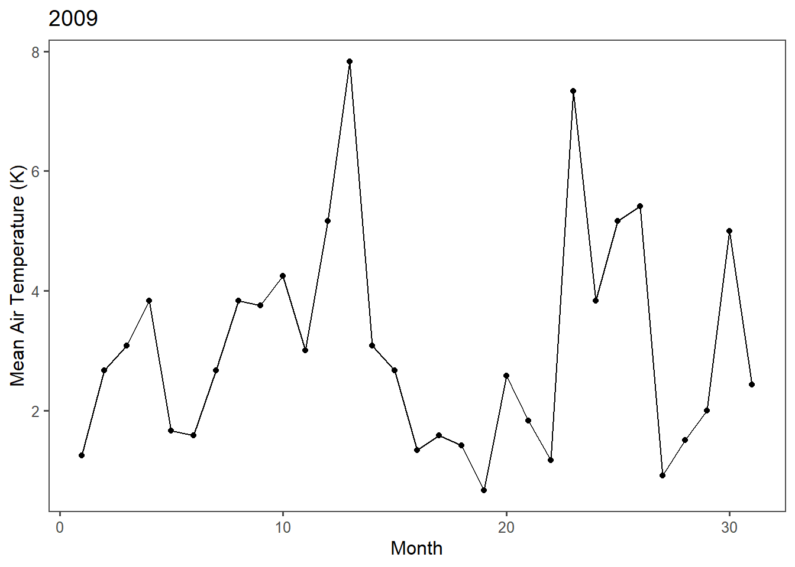
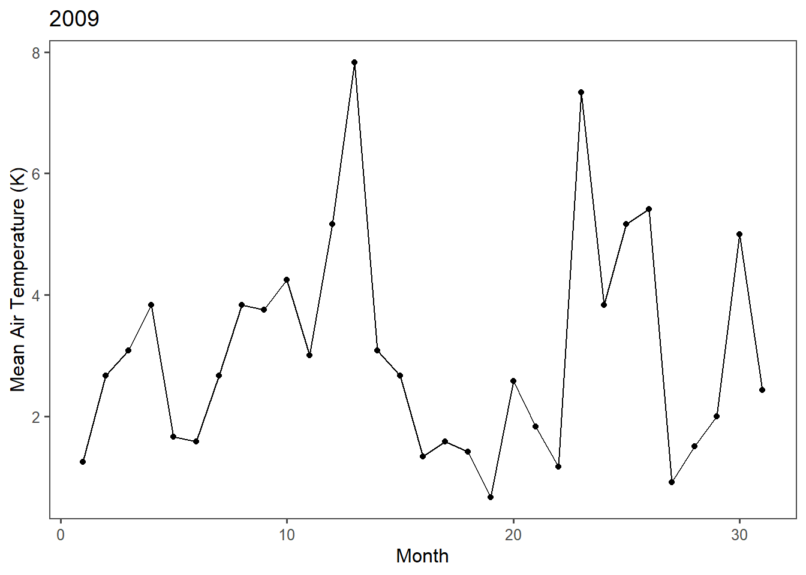

Chapter 4 Working with snow data
4.1 Overview
Understanding the seasonal delivery and distribution of mountain snow cover, snowpack, and seasonal trends is important to the American West and to snowmelt-watered regions everywhere.The Center for Snow and Avalanche Studies established and operates the Senator Beck Basin Study Area as a purpose-built mountain system observatory in an alpine headwater catchment of the Uncompahgre River at Red Mountain Pass, in the western San Juan Mountains of southwest Colorado. Senator Beck Basin is located in a critically wet and cold portion of the Colorado River Basin.
Here is a map from the Center for Snow and Avalanche Studies indicating sample site locations in Colorado, USA (http://snowstudies.org/sbbsa1.html). The Senator Beck Study Plot (SBSP), Swamp Angel Study Plot (SASP), and associated Senator Beck Stream Gauge (SBSG) and Putney Study Plot (PTSP) are indicated by yellow triangles within the Senator Beck Basin (SBB).
 In the assignment below, I’ll work through manipulating some of the precipitation and temperature data collected as part of the long term Mountain System Monitoring.
In the assignment below, I’ll work through manipulating some of the precipitation and temperature data collected as part of the long term Mountain System Monitoring.
4.2 Methods
This analysis uses the SASP forcing and SBSP_forcing meteorological data sets to understand how temperature and precipitation patterns change with time at the two sites.
4.3 Analysis and Discussion
4.3.1 Extract the meteorological data URLs. Here we want you to use the rvest package to get the URLs for the SASP forcing and SBSP_forcing meteorological datasets.
site_url <- 'https://snowstudies.org/archived-data/'
#Read the web url
webpage <- read_html(site_url)
#Extract only weblinks and then the URLs!
links <- webpage %>%
html_nodes('a') %>% #a indicates a link to something
.[grepl('forcing',.)] %>%
html_attr('href')
links## [1] "https://snowstudies.org/wp-content/uploads/2022/02/SBB_SASP_Forcing_Data.txt"
## [2] "https://snowstudies.org/wp-content/uploads/2022/02/SBB_SBSP_Forcing_Data.txt"4.3.2 Download the meteorological data. Use the download_file and str_split_fixed commands to download the data and save it in your data folder.
## [,1] [,2] [,3] [,4] [,5] [,6] [,7]
## [1,] "https:" "" "snowstudies.org" "wp-content" "uploads" "2022" "02"
## [2,] "https:" "" "snowstudies.org" "wp-content" "uploads" "2022" "02"
## [,8]
## [1,] "SBB_SASP_Forcing_Data.txt"
## [2,] "SBB_SBSP_Forcing_Data.txt"## [1] "data already downloaded"4.3.3 Writing a custom function to read in the data and append a site column to the data.
Below is code for creating a for loop to read in the data. Note the function is included in Q4 where I use map to read in the data and append a site column.
#Pattern matching to only keep certain files
weather_files <- file_names %>%
.[!grepl('24hr',.)]
empty_data <- list()
weather_data <- for(i in 1:length(weather_files)){
empty_data[[i]] <- read_table(file_names[i],col_names=headers)
read_table(weather_files[i])
}
str(empty_data)
# select(Year,DOY,Sno_Height_M)
weather_data_full <- do.call('rbind',empty_data) %>%
select(year,month,day,"precip [kg m-2 s-1]","air temp [K]")
#mutate(site = name)
#summary(weather_data_full)4.3.4 As a map function with tibble displayed
## year month day precip [kg m-2 s-1]
## Min. :2003 Min. : 1.000 Min. : 1.00 Min. :0.000e+00
## 1st Qu.:2005 1st Qu.: 3.000 1st Qu.: 8.00 1st Qu.:0.000e+00
## Median :2007 Median : 6.000 Median :16.00 Median :0.000e+00
## Mean :2007 Mean : 6.472 Mean :15.76 Mean :3.838e-05
## 3rd Qu.:2009 3rd Qu.: 9.000 3rd Qu.:23.00 3rd Qu.:0.000e+00
## Max. :2011 Max. :12.000 Max. :31.00 Max. :6.111e-03
## air temp [K] site
## Min. :242.1 Length:138336
## 1st Qu.:265.8 Class :character
## Median :272.6 Mode :character
## Mean :272.6
## 3rd Qu.:279.7
## Max. :295.84.3.5 Make a line plot of mean temp by year by site
In the plot of mean temp by year by site, we see a sharp decline in mean temperature in 2003. A difference of nearly 10 K in 2003 compared to the other years does not make sense. I expect that there was instrument error or calibration error in the data during the first year of collection, which is causing this outlier in mean annual temperatures.

4.3.6 Write a function that makes line plots of monthly average temperature at each site for a given year. Use a for loop to make these plots for 2005 to 2010.
Monthly average temperatures are always warmer at the Swamp Angel study plot compared to the Senator Beck study plot.This makes sense given that SASP is located in a sheltered location below treeline.SBSP is located above treeline in the alpine tundra.

4.3.7 Plot of average daily precipitation by day of year (averaged across all available years).
Precipitation data here was converted from kg m-2 s-1 to mm/day. However, the precipitation values are not realistic and suggest the conversion was inaccurate. Nonetheless, the general pattern can still be gleaned from these plots. 
4.3.8 Use a function and for loop to create yearly plots of precipitation by day of year.
 
